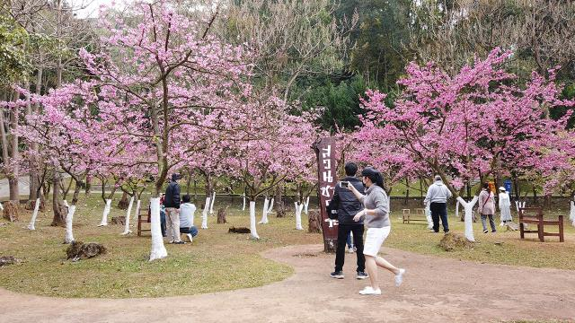
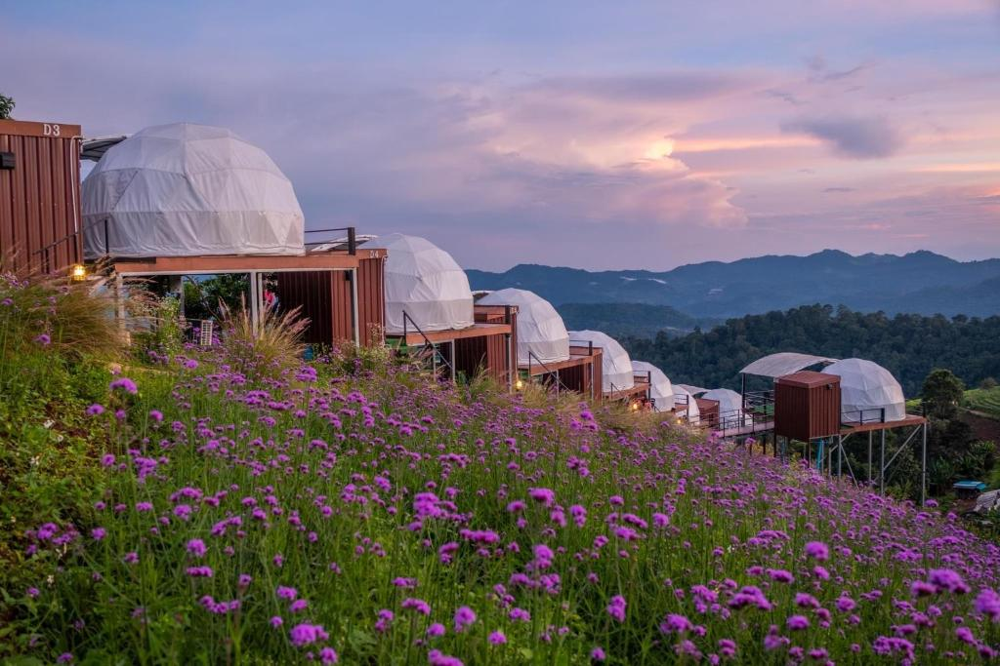

สถานที่ท่องเที่ยวแนะนำจังหวัดเชียงใหม่ในปี 2024
1. วัดพระธาตุดอยสุเทพ
วัดพระธาตุดอยสุเทพราชวรวิหาร ตั้งอยู่ในอุทยานแห่งชาติดอยสุเทพ-ปุย วัดมีความสูงจากระดับที่ราบเชียงใหม่ราว 689 เมตร และมีความสูงจากระดับน้ำทะเลปานกลาง 1,046 เมตร เป็นหนึ่งในวัดที่มีความสำคัญมากที่สุดของจังหวัดเชียงใหม่
2. ดอยอินทนนท์
ดอยอินทนนท์ เป็นยอดเขาที่สูงที่สุดในประเทศไทย ตั้งอยู่ที่อำเภอจอมทอง จังหวัดเชียงใหม่ เดิมมีชื่อว่า "ดอยหลวง" หรือ "ดอยหลวงอ่างกา" ชื่อของ ดอยอินทนนท์ เป็นชื่อของกษัตริย์พระนามว่าพระเจ้าอินทวิชยานนท์

3. ดอยอ่างขาง
ดอยอ่างขาง ตั้งอยู่บนทิวเขาแดนลาว ตำบลแม่งอน อำเภอฝาง จังหวัดเชียงใหม่ มีความสูงโดยค่าเฉลี่ย 1,400 เมตรจากระดับน้ำทะเล และมียอดดอยสูงสุดถึง 1,928 เมตร เป็นที่ตั้งของสถานีเกษตรหลวงอ่างขาง ซึ่งเป็นสถานีวิจัยแห่งแรกของโครงการหลวง
4. ม่อนแจ่ม
ม่อนแจ่ม ตั้งอยู่บริเวณหมู่บ้านม้งหนองหอย ในตำบลแม่แรม อำเภอแม่ริม จังหวัดเชียงใหม่ มีลักษณะเป็นพื้นที่บนสันเขา มียอดสูงราว 1,350 เมตร บริเวณใกล้ ๆ ม่อนแจ่ม เป็นที่ตั้งของศูนย์พัฒนาโครงการหลวงหนองหอย
5. สวนสัตว์เชียงใหม่
สวนสัตว์เชียงใหม่ เป็นสวนสัตว์ในความดูแลขององค์การสวนสัตว์แห่งประเทศไทย ในพระบรมราชูปถัมภ์ ตั้งอยู่บริเวณทางขึ้นดอยสุเทพ บนถนนห้วยแก้ว ตำบลสุเทพ อำเภอเมืองเชียงใหม่ จังหวัดเชียงใหม่ เปิดให้บริการทุกวัน ตั้งแต่ 8.00 น. - 17.00 น.